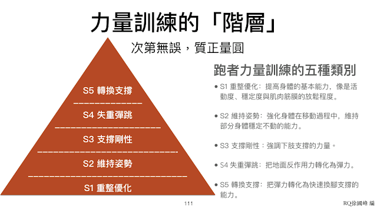

看起來最不費力的騰空階段，反而最需要力量
記得幾年前跟甘思元老師談話時，他提到「次第無誤，質正量圓」八個字，一直記在心裡。我的理解是：先有訓練的「次第」（優先順序），才有訓練的品質，最後才求訓練量的圓滿（找到當下適合該學員的訓練量）。所以在思考跑者的專項力量訓練時，動作「次第」的邏輯一直是我首先需要確認的。
最終，我定下來的次第是附圖的金字塔：活動度→穩定度→維持姿勢的能力→下肢剛性→彈性→轉換支撐(拉起的能力)。「拉起」是在騰空階段，看起來最不費力的「拉起」，反而最需要力量。這篇文章正是想說明其中的關係。

「拉起／轉換支撐」是指跑者騰空後，腳掌向上移動，接著向前擺動的過程。因為是在空中，下肢無須負擔體重，而且腳掌和腿部的重量也很輕，擺動應該不用費太多力氣，但在空中的這些動作，反而最需要力量，不然根本做不出優秀的「拉起技巧」。身體在空中時所需的力量，並不一定需要很大/很壯的肌肉。
- 支撐期：「力量」的需求主要來自支撐腿，要撐得住自己的體重，支撐得愈穩，身體向前移動的速度與效率愈高。此時腳掌是支撐點；移動的部位是軀幹和騰空腿。
- 騰空期：「力量」的主要需求改成維持軀幹的穩定度，此時支撐點改為軀幹，移動的部位則變成剛離地的後腳；我們希望後腳能「及時」向前擺回身體下方。
這裡用「及時」的意思是，不應主動加速拉回後腳，更不應過度用力使腳懸在身後太久。加速拉回會使軀幹向後，破壞原本的節奏，也會很容易使得下一步的腳掌落到臀部前方；過度上拉或腳掌離地後不懂得放鬆，使得騰空初期的腳掌懸在身後，不只後大腿容易緊繃，跑步效率下降、另一隻腳掌容易落在臀部前方造成剎車效應。
過去在分析跑者的跑姿時，發現不少跑者都會有「後腿懸在身後，無法『及時』回到臀部下方」的問題，在擔任教練初期會以為是跑者技巧上的問題，因此一直要求跑者放鬆，讓後腿「自然隨著重力擺盪回來」（不主動向前拉回，也不要不自覺用力地使腳掌懸在身後），可是後來發現跑者不是不聽話或是技術練不夠，而是他們力量不夠，所以做不到。
基本的邏輯是：支撐不穩定，非支撐（移動）的部位就無法放鬆。意思是當支撐部位晃動或振動了，非支撐部位就會自然緊張、不自覺用力。
當身體離地後，如果此時軀幹不穩定（骨盆前傾或軀幹扭轉），後腿就會無法放鬆。騰空時軀幹無法穩定的原因相當多，只要下面其中之一發生，軀幹都會不穩：
- 胸椎與肩關節活動度不夠，上肢關節太緊，所以擺臂空間不夠，造成軀幹的扭轉。
- 髖關節的活動度不夠，軀幹在向前落下階段勢必會造成臀部扭轉，帶動胸椎扭轉。
- 軀幹與臀部的鏈結力量不足，無法抗伸展與抗旋轉。
- 下肢支撐力量不足，落地後撐不住，膝蓋過彎、臀部下沉，造成身體上下振動幅度太大。這會造成腿部離地後過於僵硬，如此後腿變成了主要支撐，軀幹就會更容易不穩（軀幹想不動的話就要更用力才能保持穩定）。
- 下肢沒有彈性，所以落地與離地是以肌力為主，造成下肢肌肉在離地前仍是處於相對緊繃的狀態，那離地後當然就無法及時向前擺盪。反之，具有彈性的下肢，落地/離地時的肌肉相對放鬆，因此一離地就能自然隨著重力，像鐘擺一樣向前擺動。
歸納來說，活動度、穩定度或下肢力量不足都會使騰空期的軀幹不穩定，軀幹不穩定，後腿就無法放鬆地像鐘擺一樣隨著地心引力自然向前擺盪。
所以，又回到了相同的訓練邏輯：「需要有力量，才會有好的技術」，連看起來最不需要力量的騰空階段也是。
—
今年 10 月會在台北開一場跑者的專項力量訓練課，在該課程中會再把上述的力量訓練邏輯說清楚，以及各需配上什麼訓練動作，動作的進/倒階如何設計，一個完整的跑者專項力量課表該怎麼設計…等，有興趣的人可以參考簡章：
https://forms.gle/6aBQDciK7koNBPJm6